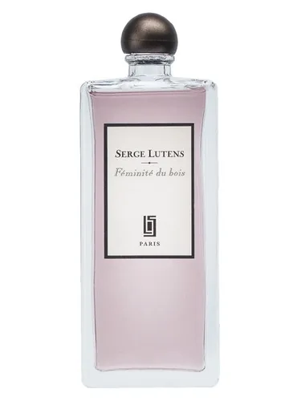

Féminité du Bois
- Unisex
- Familia oriental
- Lanzado en 2009
$4,899
Precio de referencia. Te confirmamos el precio final y la presentación por WhatsApp antes de enviar.
Por encargo: lo conseguimos para ti
Cómo huele
Especiado cálido
Amaderado
Frutal
Atalcado
Dulce
Sus notas
Salida
cedro de Virginiaciruelacanelamelocotón
Corazón
clavojengibrevioletaylang-ylangrosaflor de naranjo africana
Fondo
sándalobenjuíalmizclevainilla
Féminité du Bois de Serge Lutens es un perfume oriental para mujer y hombre, lanzado en 2009. Abre con cedro de Virginia y ciruela, en el corazón tiene clavo y jengibre y deja un fondo de sándalo y benjuí. Lo que más se siente: especiado cálido, amaderado y frutal.